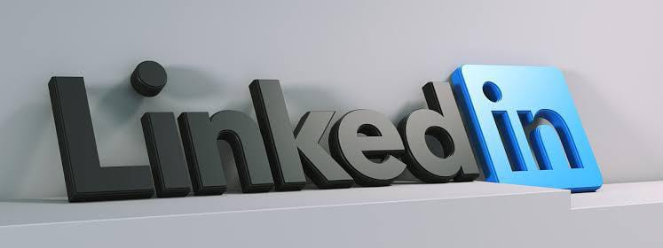

|  | |
| Ayo buruan daftar linkedIn! Download aplikasinya disini | |
|
|
LinkedIn merupakan salah satu jejaring sosial media yang berorientasi pada bisnis dan jaringan Profesional. Melalui situs ini, seseorang dapat memajang keahlian dan pengalaman yang dimilikinya, baik itu karyawan, pengusaha, dosen, hingga mahasiswa.
LinkedIn di mulai di ruang tamu pendirinya, Reid Hoffman, pada tahun 2002 dan resmi diluncurkan pada 5 Mei 2003. CEO LinkedIn saat ini adalah Jeff Weiner, dengan menejemen yang terdiri dari eksekutif berpengalaman dari perusahaan seperti Google, Microsoft, Yahoo, dan lainnya. Pertumbuhan pengguna linkedIn yang kian meningkat menciptakan peluang dan kesempatan untuk mendapatkan karier terbaik sangat terbuka. Seorang recruiter terkadang juga mencari dan melihat kandidat melalui LinkedIn. Berikut ini akan dipaparkan beberapa manfaat LinkedIn 1. Sarana Personal Branding
2. Mencari Peluang Karir
3. Meningkatkan Pengetahuan
4. Belajar dan Pengembangan
5.Menyebarkan Konten dan Ide
6. Mencari Klien atau Mitra Bisnis
|
|---|---|
|
| |